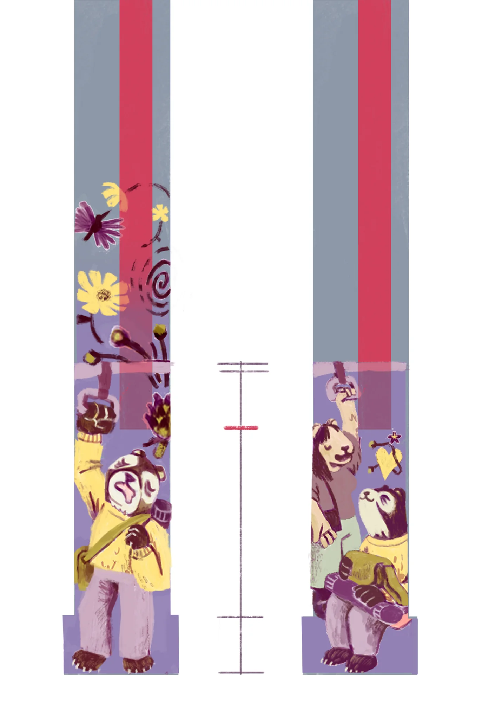
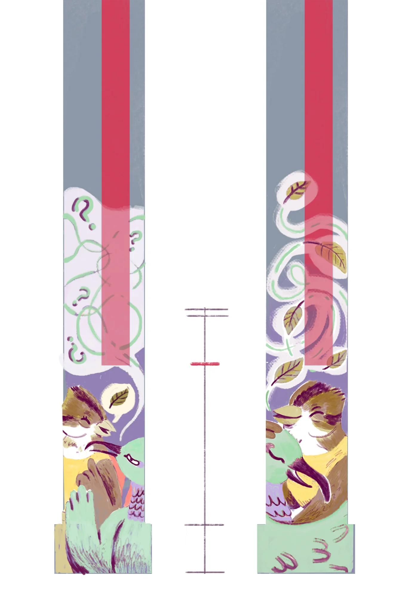
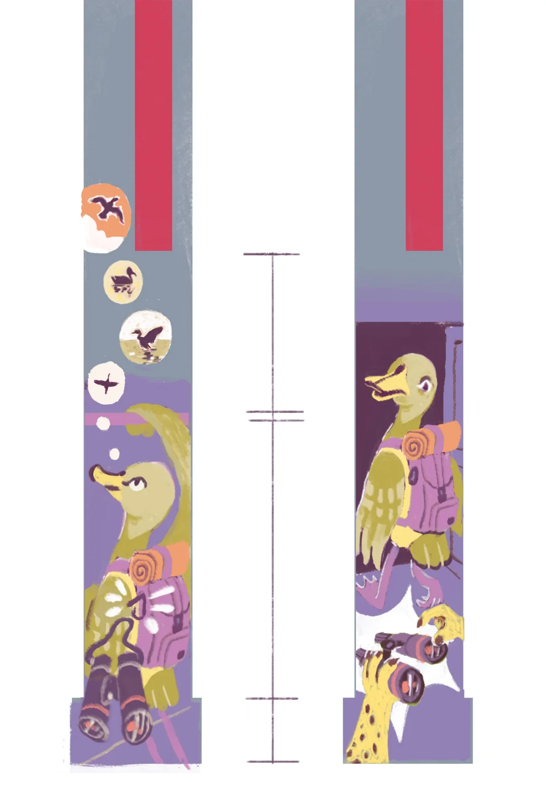
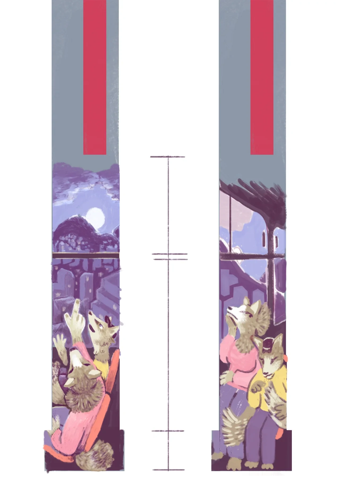
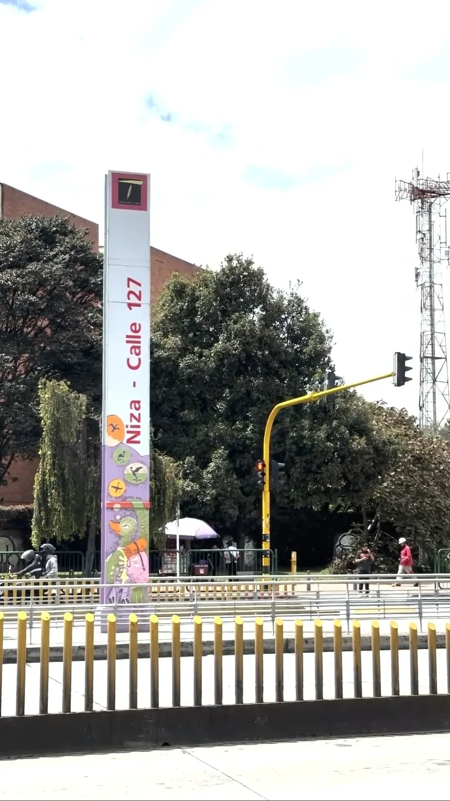
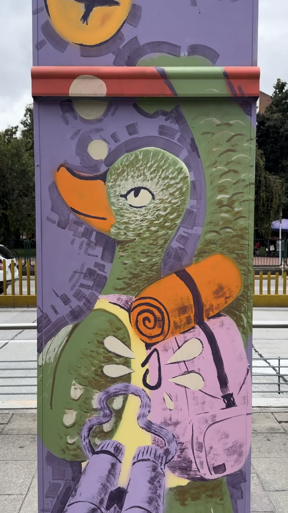
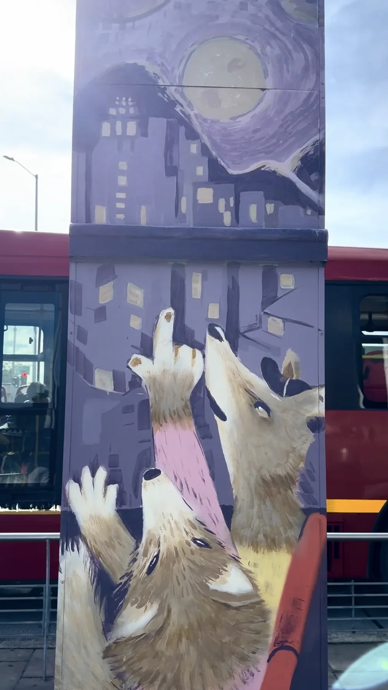
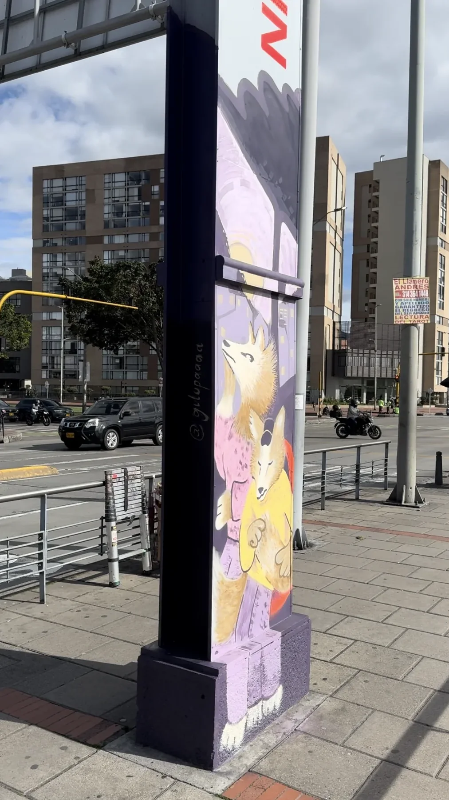
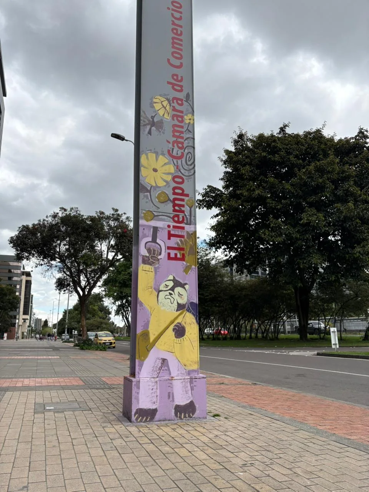
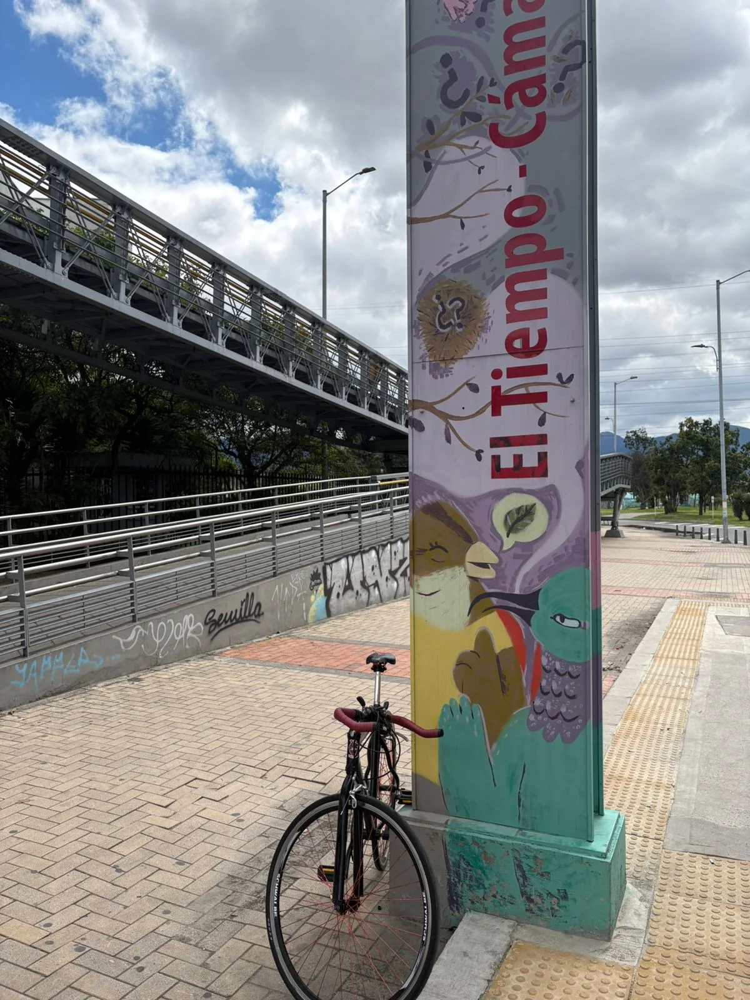

Murales en TransMilenioTransMilenio murals
Muralismo en estaciones de transporte públicoMurals at public transport stations
Ilustraciones para columnas de estaciones de TransMilenio en Bogotá, seleccionadas en la convocatoria «En mi Transmi pasan cosas buenas» del año 2025. La propuesta ofrece una mirada sensible y colectiva del transporte público: los pequeños gestos de empatía que compartimos cada día y que pasan desapercibidos. Los personajes se inspiran en especies presentes en la sabana de Bogotá y representan la diversidad de personas que confluyen en la ciudad y en el sistema de transporte.
Illustrations for columns at TransMilenio stations in Bogotá, selected in the 2025 open call “En mi Transmi pasan cosas buenas”. The proposal offers a sensitive, collective view of public transport: the small gestures of empathy we share every day that go unnoticed. The characters are inspired by species found on the Bogotá savanna and represent the diversity of people who come together in the city and in the transport system.





Diseños de las cuatro columnas.Designs for the four columns.




Las columnas en las estaciones.The columns at the stations.

